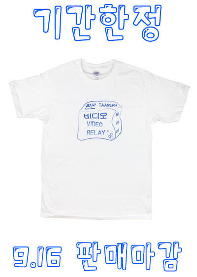
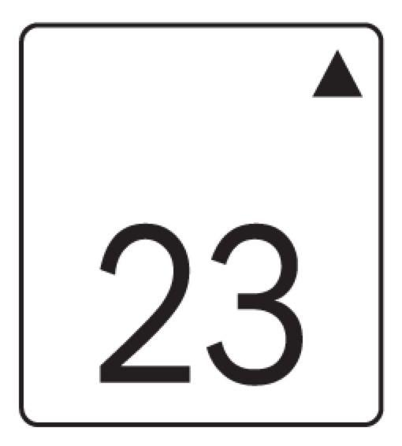

- 제5회 비디오 릴레이 탄산 | 5th Video Relay TAANSAN
- 일시: 2016. 8. 2/ 8. 5/ 8. 12/ 8. 16/ 8. 19/ 8. 23
- 참여작가: 김기범, 김다움, 김도효, 류한솔, 박보마, 백수현, 윤세영, Ian Berry 이안 베리, 최리아
- 주최: 비디오 릴레이 탄산
- 후원: 정지영,

, - 포스터: 강정석(김정태 협력)
- 장소:
- 23층
서울특별시 영등포구 여의동로3길 10 (여의도동47) 여의도자이 오피스텔 501동 2302호
2302, 501 Yeouido Xi Office-tel, 10, Yeouidong-ro 3-gil, Yeongdeungpo-gu, Seoul - 2016. 8. 2. 20:00
- 이안 베리 Ian Berry
- <브렌다, 다이빙하다 Brenda Dives>(documentary), 7'25'', 2009
- <무비 매드니스 Movie Madness>(documentary), 18'50'', 2010
- <시민, 싸다 Citizen Came>(documentary), 5'20'', 2010
- <C______의 상자 안 Contents of C______'s Box, in no particular order>(documentary), 2'42'', 2012
- <우리가 실패하는 방법들 The Ways We Fail>(fiction), 11'6'', 2016
- 2016. 8. 5. 20:00
- 김기범 Gibum-Gim
- <라바콘 Traffic cone>, 10'33'', 2010
- <노들까페 Nodel café>, 6'53'', 2011
- <딱!딱!딱! Tight!Tight!Tight!>, 3'35'', 2012
- <ZF39>,9'9'', 2012
- <볼레로 Bolero>, 14'58'', 2014
- 2016. 8. 12. 20:00
- 윤세영 Seyoung Yoon
- <더 웨이 백 댄서 The Way Back Dancer>, 5'38'', 2013
- <뭐 찾아 Looking for>, 10'35'', 2013
- <미열; 10* fever; 10*>, 14'44'', 2014
- <음메 She-goat>, 1'9'', 2015
- <타이테로이가카 Tytheroygaka>(by Soon Boon), 29'38'', 2015
- <더블 애드 트러블 Double Ad.Trouble>, 2'58'', 2015
- 2016. 8. 16. 20:00
- 김다움 Daum Kim
- <유년기의 끝 Childhood’s End>, 4'30'', 2009
- <리카 Rika>, 8'18'', 2010
- <정일 Jong-il>, 16'50'', 2012
- <상호간접 Mutually Mediated>, 10', 2013
- <마리 Marie>, 4'53'', 2014
- <신기루의 시간 Mirage Time>, 13'43'', 2015
- 2016. 8. 19. 20:00
- 최리아 RIACHOI
- <불임들 blow up>, 1'3'', 2013
- <A POWER LOOM>, 12', 2014
- <거미가침 Geo mi ga ciM>, 9'13'', 2014
- <galaxy>, 12'30'', 2016
- 21:00
- 류한솔 Ryu Han-sol
- <퐁퐁>, 6'7'', 2014
- <와르르르>, 4'48'', 2014
- <드투-드 튝뜥>, 12'51'', 2016
- 2016. 8. 23. 20:00
- 백수현 Soohyeon Baek(+) ~ 박보마 fldjf studio(-) ~ 김도효 Dohyo Kim(+)
- <purple neon(+) ~ nude reflection(-) ~ white ray(+)>, 60', 2016